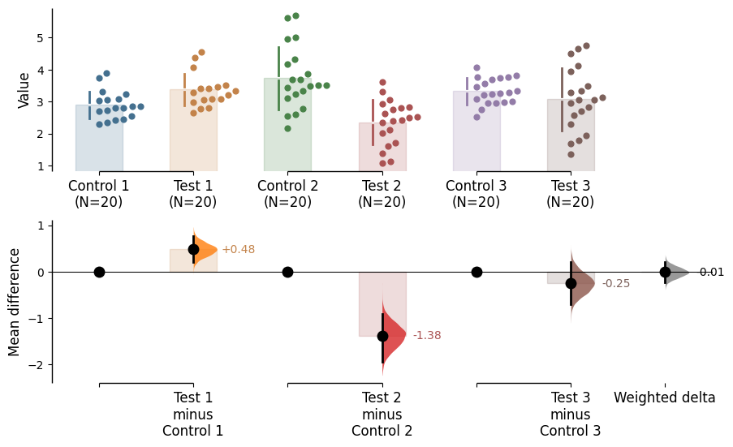
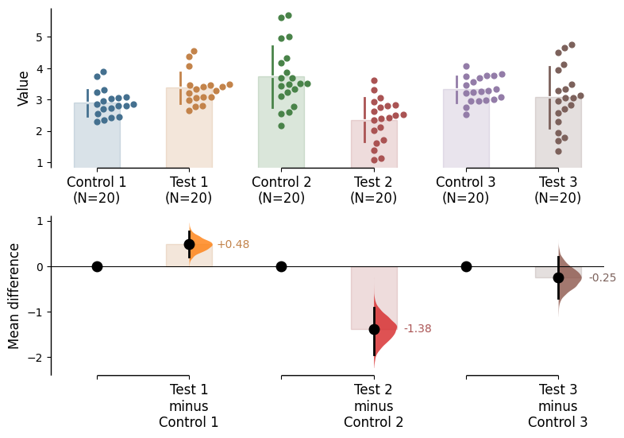

Explanation of how to compute the meta-analyzed weighted effect size using dabest.
When scientists conduct replicates of the same experiment, the effect size of each replicate often varies, complicating the interpretation of the results. Starting from v2023.02.14, DABEST can now compute the meta-analyzed weighted effect size given multiple replicates of the same experiment. This can help resolve differences between replicates and simplify interpretation.
For this function, the generic inverse-variance weighting method is used to calculate a weighted mean difference, as follows:
Where \(\hat{\Delta}_w\): estimated weighted delta;
\(w_i\): weight for replicate \(i\);
\(\hat{\sigma}_i^2\): sampling variance of the mean-difference estimator for replicate \(i\);
\(\hat{\Delta}_i\): estimated mean difference for replicate \(i\);
\(\hat{w}_i\): estimated weight for replicate \(i\);
\(n_i\): number of bootstrap replicates used for replicate \(i\);
\(\hat{\Delta}_i^{(r)}\): the \(r\)-th bootstrap estimate of the mean difference for replicate \(i\);
\(\bar{\Delta}_i^{\mathrm{b}}\): bootstrap mean of the mean differences for replicate \(i\)
Note that this utilizes the fixed-effects model of meta-analysis, in contrast to the random-effects model. In the fixed-effects model, all variation between the results of each replicate is assumed to be solely due to sampling error. Therefore, we recommend using this function exclusively for replications of the same experiment, where it can be safely assumed that each replicate estimates the same population mean \(\mu\).
Additionally, be aware that as of v2023.02.14, DABEST can only compute weighted effect size for mean difference only, and not for standardized measures such as Cohen’s d.
Numba compilation complete!
We're using DABEST v2025.10.20
Creating a demo dataset
from scipy.stats import norm # Used in generation of populations.np.random.seed(9999) # Fix the seed to ensure reproducibility of results.Ns =20# The number of samples taken from each population# Create samplesc1 = norm.rvs(loc=3, scale=0.4, size=Ns)c2 = norm.rvs(loc=3.5, scale=0.75, size=Ns)c3 = norm.rvs(loc=3.25, scale=0.4, size=Ns)t1 = norm.rvs(loc=3.5, scale=0.5, size=Ns)t2 = norm.rvs(loc=2.5, scale=0.6, size=Ns)t3 = norm.rvs(loc=3, scale=0.75, size=Ns)# Add a `gender` column for coloring the data.females = np.repeat('Female', Ns/2).tolist()males = np.repeat('Male', Ns/2).tolist()gender = females + males# Add an `id` column for paired data plotting.id_col = pd.Series(range(1, Ns+1))# Combine samples and gender into a DataFrame.df = pd.DataFrame({'Control 1' : c1, 'Test 1' : t1,'Control 2' : c2, 'Test 2' : t2,'Control 3' : c3, 'Test 3' : t3,'Gender' : gender, 'ID' : id_col })df.head()
Control 1
Test 1
Control 2
Test 2
Control 3
Test 3
Gender
ID
0
2.793984
3.420875
3.324661
1.707467
3.816940
1.796581
Female
1
1
3.236759
3.467972
3.685186
1.121846
3.750358
3.944566
Female
2
2
3.019149
4.377179
5.616891
3.301381
2.945397
2.832188
Female
3
3
2.804638
4.564780
2.773152
2.534018
3.575179
3.048267
Female
4
4
2.858019
3.220058
2.550361
2.796365
3.692138
3.276575
Female
5
We now have three Control and three Test groups, simulating three replicates of the same experiment. Our dataset has also a non-numerical column indicating gender, and another column indicating the identity of each observation.
This is known as a ‘wide’ dataset. See this writeup for more details.
Loading data
Next, we load data as usual using dabest.load(). However, this time, we also specify the argument mini_meta=True. Since we are loading data from three experiments, idx is passed as a tuple of tuples, as shown below.
When this dabest object is invoked, it should indicate that effect sizes will be calculated for each group, along with the weighted delta. It is important to note once again that the weighted delta will only be calculated for mean differences.
DABEST v2025.10.20
==================
Good afternoon!
The current time is Sun Oct 19 16:00:46 2025.
Effect size(s) with 95% confidence intervals will be computed for:
1. Test 1 minus Control 1
2. Test 2 minus Control 2
3. Test 3 minus Control 3
4. weighted delta (only for mean difference)
5000 resamples will be used to generate the effect size bootstraps.
By calling the mean_diff attribute, you can view the mean differences for each group as well as the weighted delta.
unpaired.mean_diff
DABEST v2025.10.20
==================
Good afternoon!
The current time is Sun Oct 19 16:00:47 2025.
The unpaired mean difference between Control 1 and Test 1 is 0.48 [95%CI 0.205, 0.774].
The p-value of the two-sided permutation t-test is 0.001, calculated for legacy purposes only.
The unpaired mean difference between Control 2 and Test 2 is -1.38 [95%CI -1.93, -0.905].
The p-value of the two-sided permutation t-test is 0.0, calculated for legacy purposes only.
The unpaired mean difference between Control 3 and Test 3 is -0.255 [95%CI -0.696, 0.208].
The p-value of the two-sided permutation t-test is 0.293, calculated for legacy purposes only.
The weighted-average unpaired mean differences is -0.00983 [95%CI -0.225, 0.213].
The p-value of the two-sided permutation t-test is 0.941, calculated for legacy purposes only.
5000 bootstrap samples were taken; the confidence interval is bias-corrected and accelerated.
Any p-value reported is the probability of observing theeffect size (or greater),
assuming the null hypothesis of zero difference is true.
For each p-value, 5000 reshuffles of the control and test labels were performed.
To get the results of all valid statistical tests, use `.mean_diff.statistical_tests`
You can view the details of each experiment by accessing the property mean_diff.results as follows.
Note, however, that this does not contain the relevant information for our weighted delta. The details of the weighted delta are stored as attributes of the mini_meta object, such as:
group_var: the pooled group variances of each set of 2 experiment groups.
difference: the weighted mean difference calculated based on the raw data.
bootstraps: the deltas of each set of 2 experiment groups calculated based on the bootstraps.
bootstraps_weighted_delta: the weighted deltas calculated based on the bootstraps.
permutations: the deltas of each set of 2 experiment groups calculated based on the permutation data.
permutations_var: the pooled group variances of each set of 2 experiment groups calculated based on permutation data.
permutations_weighted_delta: the weighted deltas calculated based on the permutation data.
A dataframe of this mini meta dabest object can also be called via the mini_meta.results attribute.
unpaired.mean_diff.mini_meta.results
control
test
control_N
test_N
control_var
test_var
group_var
difference
ci
bca_low
bca_high
bca_interval_idx
pct_low
pct_high
pct_interval_idx
bootstraps_deltas
bootstraps_weighted_delta
permutations
permutations_var
permutations_weighted_delta
pvalue_permutation
permutation_count
bias_correction
jackknives
0
[Control 1, Control 2, Control 3]
[Test 1, Test 2, Test 3]
[20, 20, 20]
[20, 20, 20]
[0.17628013404546258, 0.9584767911266554, 0.16...
[0.24512071870152594, 0.48609989925165153, 0.9...
[0.2107004263734943, 0.7222883451891535, 0.567...
-0.00983
95
-0.225073
0.213221
(133, 4883)
-0.227199
0.210616
(125, 4875)
[[0.6148498102262239, 0.6752095203445543, 0.30...
[0.1383993266160009, 0.040698566036827026, -0....
[[-0.17259843762502491, 0.03802293852634886, -...
[[0.26356588154404337, 0.2710249543904699, 0.2...
[-0.11757207833491819, -0.01292867970093462, -...
0.9412
5000
0.014539
[-0.010633066723935882, -0.010613522663007862,...
Generating mini meta plots
unpaired.mean_diff.plot();

You can also hide the weighted delta by passing the argument show_mini_meta=False. In this case, the resulting graph would be identical to a multiple two-groups plot.
unpaired.mean_diff.plot(show_mini_meta=False);

As with regular two-groups plots, you can also analyse paired mini meta experiments via the paired=baseline argument.